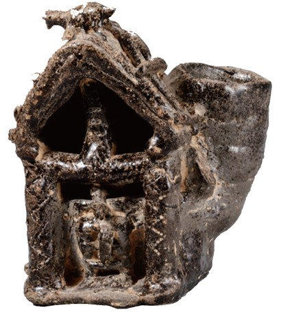

사회
닫기
궁금해요
토기로 살펴보는 가야인의 생활 모습
가야에서는 사람, 동물, 물건의 모양을 본떠 만든 토기가 많이 발견되었습니다. 이를 통해서 무엇을 알 수 있을까요?
예시 보기
닫기
닫기
집 모양 토기(대구광역시 달성군 출토)

가야 사람들이 살았던 집의
모습을 본뜬 것으로 보인다.
배 모양 토기(국립중앙박물관)
가야 사람들은 배를 이용해 바다 건너 일본(왜) 등과 교류하
였다.
 궁금해요
궁금해요 궁금해요
궁금해요